My Work
2026
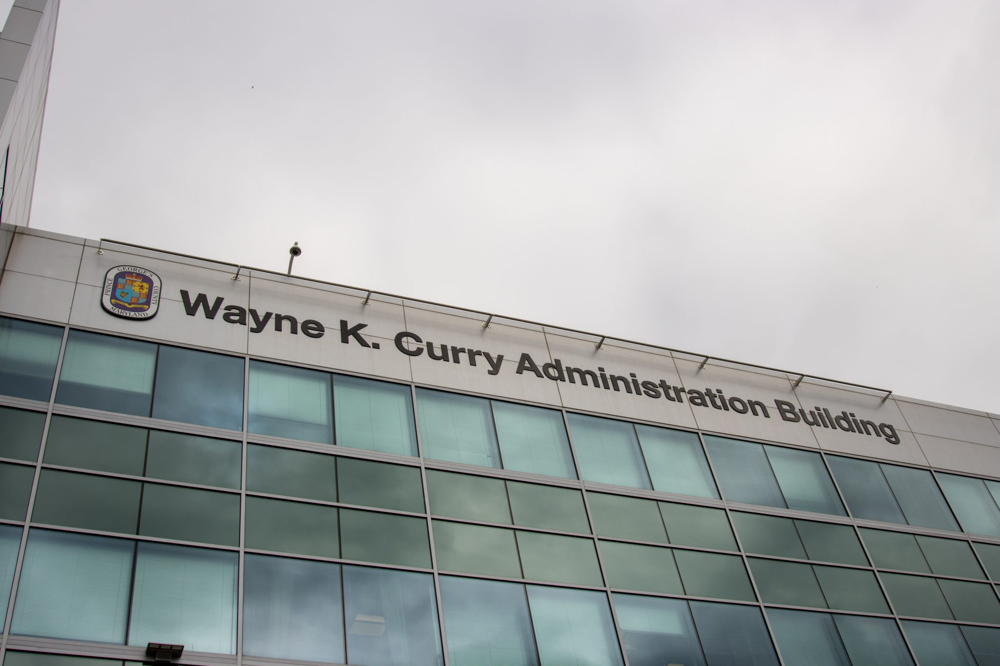
Prince George’s County grant dispute continues after nonprofit returns $7.6 million
10.30.30 - The Diamondback
Read the Full ArticlePrince George’s County Council confirms financing, community benefits of Sphere project
10.28.26 - The Diamondback
Read the Full Article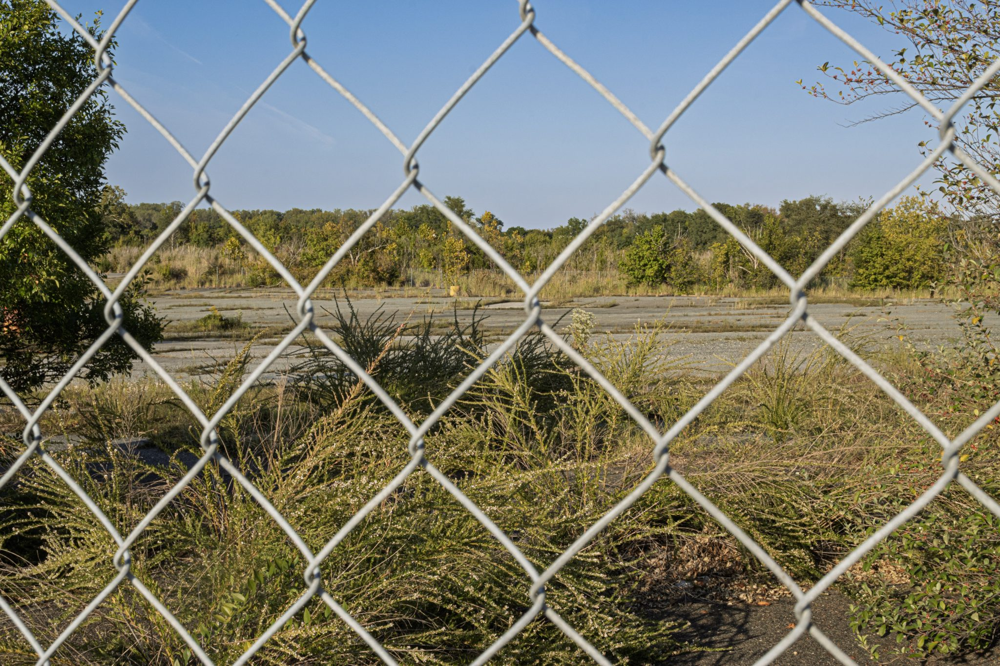
Prince George’s County Council reinstates site plan review requirement for data centers
10.28.26 -The Diamondback
Read the Full ArticleVoters to weigh in on fate of at-large Prince George’s County Council seats
10.22.26 - The Diamondback
Read the Full Article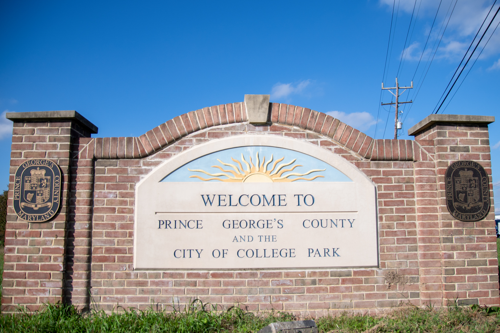
Joan’s House details services to Prince George’s County amid nonprofit funding controversy
10.21.26 - The Diamondback
Read the Full Article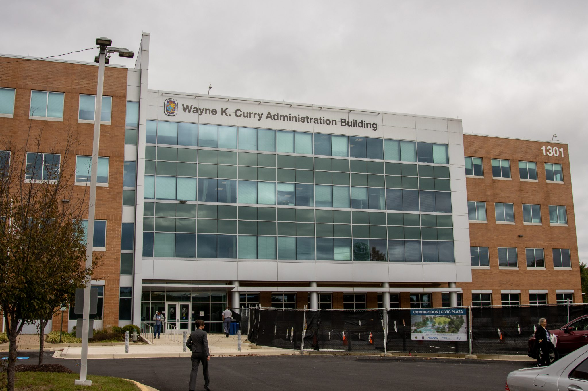
Meet the 9 Prince George’s County Council candidates running unopposed this fall
10.19.26 - The Diamondback
Read the Full ArticleHere are some key takeaways from UMD President Darryll Pines’ State of the Campus address
10.16.26 - The Diamondback
Read the Full Article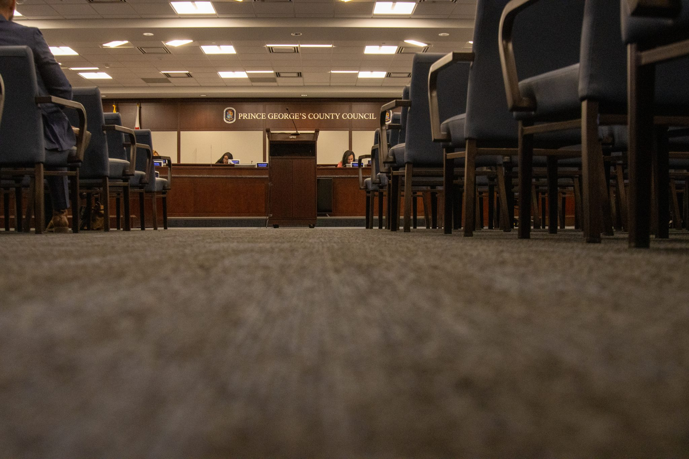
Prince George’s County leaders demand nonprofit give back $7.6M in grant funds
10.16.26 - The Diamondback
Read the Full Article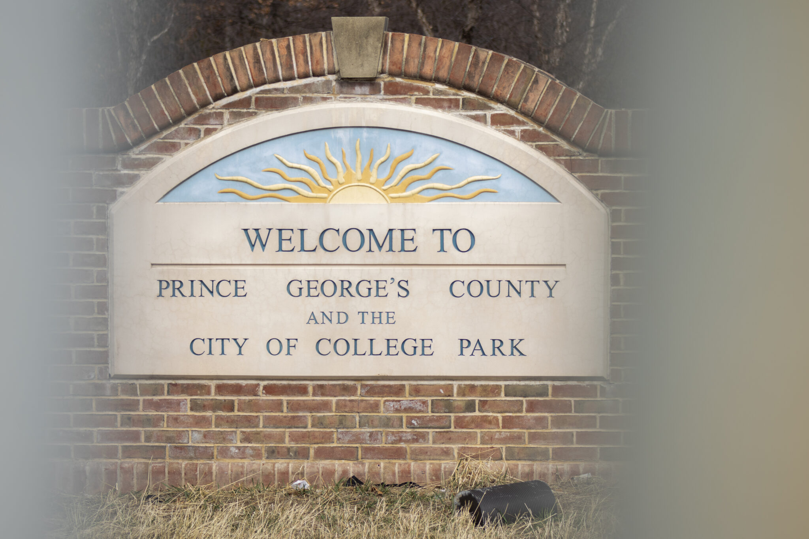
Meet the 2 Republicans trying to flip Prince George’s County Council seats
10.8.26 - The Diamondback
Read the Full Article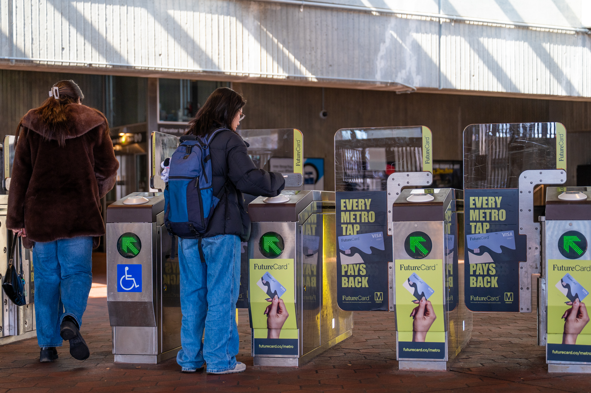
Proposed Metro price increases could raise riders’ fares by 11%
10.7.26 - The Diamondback
Read the Full Article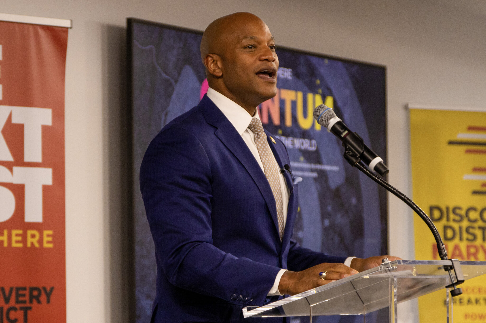
New Maryland data center task force draws mixed reactions from experts, advocacy groups
10.6.26 - The Diamondback
Read the Full ArticlePrince George’s County residents urge for stronger union protections for Sphere project
9.24.26 - The Diamondback
Read the Full Article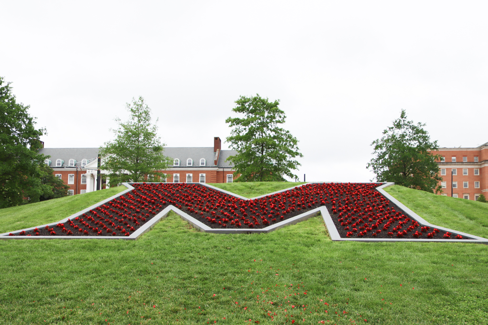
UMD falls to No. 49 in national university rankings, marking lowest spot since 2023
9.22.26 - The Diamondback
Read the Full Article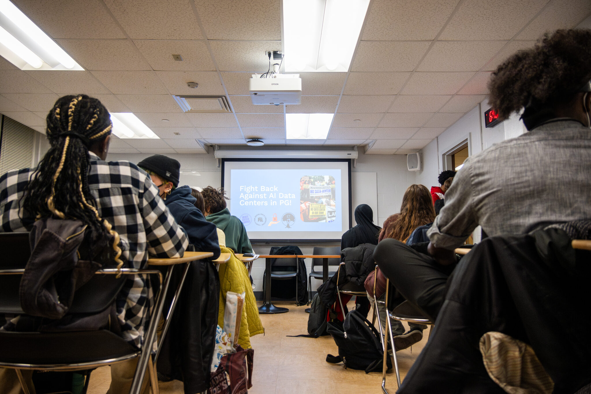
Prince George’s County Council advances bill to reinstate data center site plan reviews
9.17.26 - The Diamondback
Read the Full Article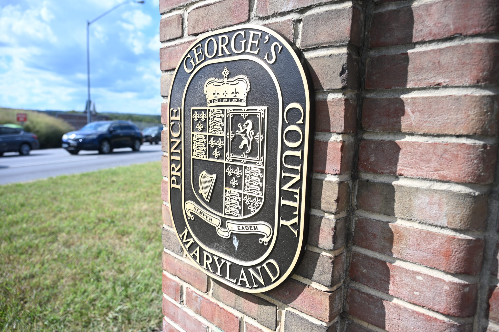
Prince George’s County Council revises $39 million park and planning budget transfer
9.16.26 - The Diamondback
Read the Full ArticlePrince George’s County joins coalition in lawsuit against USDA reorganization plan
9.8.26 - The Diamondback
Read the Full Article